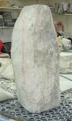
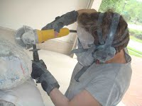
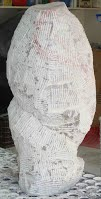
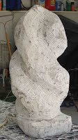
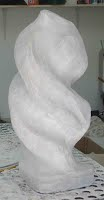
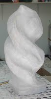
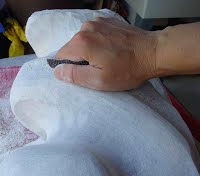
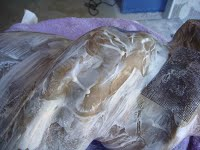
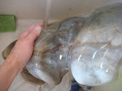
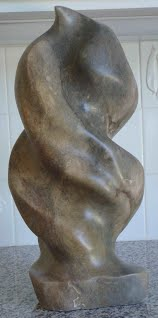

WebGL In-"sights" into Shaders, Shapes and Scenes
Teachings from Graphics Masters
Overview
- Introduction
- The Process (ORSCR)
- Observation
- Research
- Sandbox
- Creation
- Refinement
Introduction
The Real MVPs
- Karan Singh - Perception, Drawing and Interactive Modeling - Smart Graphics 2014
- Steven Wittens - Making Things with Maths - Web Directions South 2014
- Iñigo Quilez - Shadertoy: Do You Know What a Fragment Shader Can Do? - GPU Tech Conf 2014
The Process (ORSCR)
The Process of Turning Reality Into Technical Visuals
- Observation
- Research
- Sandbox
- Creation
- Refinement
Observation
Using and understanding the senses
Senses
- Not just sight
- Kinesthetic: Touch, weight, proprioception (animation)
Karan Singh on Our Sensory Interfaces
- AUDIO IN
- AUDIO OUT
- VIDEO IN
- VIDEO OUT
- ... VIDEO IN is biased
How could vision be biased?
Overcoming this bias
graemmesamonte, DeviantArt
Research
Knowing the tools and constraints
Tools - Mathematics
- "Each formula and symbol has an interpretation. It expresses an idea, a mechanism or an algorithm." - Steven Wittens
- Building things with math, like Legos
- With math you don't describe formulas... you describe things
- Procedural Generation, "Math Machines", Physics
Constraints - Principles of CG
- Your retina is a grid of cone cells that react to light, The Graphics Processing Unit (GPU) is a virtual grid of pixels that react to shaders
- Graphics Pipeline - The Visual Cortex. Open Graphics Library (OpenGL) - interacts with this using a C-like shader definition language (GLSL)
Giles Bowkett - "WebGL What the Hell" - JSLA 2014-02-27
Constraints - WebGL
- Advanced 3D computer graphics in your web browser
- ... SLOW Advanced 3D computer graphics in your web browser
- ... SLOW Advanced 3D computer graphics in
yoursome web browserS - ... SLOW Advanced 3D computer graphics in
yoursome DESKTOP web browserS
Why WebGL at all then?
- Great potential
- A future with advanced graphics on any device
- Based on a (limited, but still useful) subset of modern OpenGL - Leverages decades of graphics innovation on shaders, objects, environments, lighting, and many more
Constraints - WebGL
- An interface for the Graphics Pipeline within your Javascript
- Still requires writing shader code in C-like GLSL
// Vertex shader program 3 var VSHADER_SOURCE = 4 'attribute vec4 a_Position;\n' + 5 'void main() {\n' + 6 ' gl_Position = a_Position;\n' + 7 '}\n'; 8 9 // Fragment shader program 10 var FSHADER_SOURCE = 11 'void main() {\n' + 12 ' gl_FragColor = vec4(1.0, 0.0, 0.0, 1.0);\n' + 13 '}\n'; 14 15 function main() {... 19 // Get the rendering context for WebGL 20 var gl = getWebGLContext(canvas); ... 26 // Initialize shaders 27 if (!initShaders(gl, VSHADER_SOURCE, FSHADER_SOURCE)) {... 30 } 31 32 // Set the positions of vertices 33 var n = initVertexBuffers(gl); ... 39 // Set the color for clearing canvas ... 45 // Draw a triangle 46 gl.drawArrays (gl.TRIANGLES, 0, n); 47 } 48 49 function initVertexBuffers(gl) {50 var vertices = new Float32Array([51 0.0, 0.5, -0.5, -0.5, 0.5, -0.5 52 ]); 53 var n = 3; // The number of vertices ... 78 return n; 79 }
- That 70+ lines of code draws ... ▲
- Libraries like three.js save you from some of this
Sandbox
An environment to test and tinker
The Purpose of a Sandbox
- Play
- Complements study - Learning by Doing
- Experiment and test the limits of your tools
Choosing a Sandbox
- Accurate
- Real-time Feedback
- Are there Useful Examples?
Some example Web Graphics sandboxes
- Shaders - ShaderToy
- Exploring 3D fractals - mandelbulber
- Visualizing Functions - Grapher (Mac OS X)
Creation
From concept to (Virtual) reality
Sculpting Stone - Creation (Artist: Jill Turndorf)
    

Unformed to Rough Concept
- Start with a blank canvas, uncarved block
- Add one piece at a time
- 80/20 - Continue until it's 80% complete
DEMO: ShaderToy - Making Oobleck
- http://shadertoy.com/new
- Example code in this repo:
sample-glsl-before.txt
Refinement
Feedback and Polish
Sculpting Stone - Refinement (Artist: Jill Turndorf)
   Rough Concept to Final Product
- Viewer Feedback Cycle
- 80/20 - Complete the last 20% of polish and prep
Summary - The Process of Turning Reality Into Technical Visuals (ORSCR)
- Observation
- Research
- Sandbox
- Creation
- Refinement
THANK YOU
Any Questions?
wrenr.github.io/graphics-presentation/